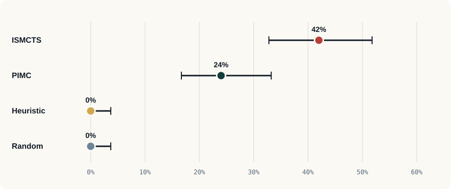
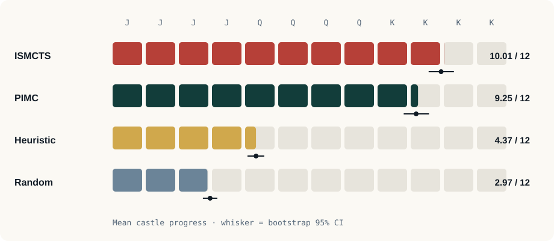
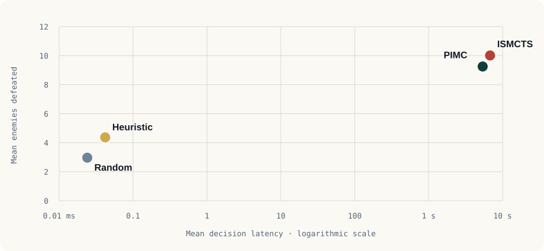

Queen tier · Partial experiment
Shared-tree search reaches furthest.
Across 100 paired solo games per agent, ISMCTS won 42 games and defeated 10.01 of 12 enemies on average. It exceeded matched-budget PIMC, but both search agents traded seconds of computation for that progress.
Partial publication dataset. These 400 rows are complete and internally analyzable, but their parent run is marked failed: after finishing the four agents, the orchestrator attempted to load a missing PPO checkpoint. PPO and AlphaZero are absent from the data and from every chart.
Protocol
Solo games used base seed 20260718 and the same 100-seed sequence for each agent. Win intervals are Wilson intervals; continuous mean intervals use 5,000 bootstrap samples. Search budgets are compute-matched by total simulations per decision. The job used five parallel workers, so timings are descriptive and not a controlled single-worker benchmark.
Win rate

The paired ISMCTS–PIMC win-rate difference was 18 percentage points (bootstrap 95% CI 6–29 points). Exact McNemar testing remained significant after Holm correction (p = 0.0129).
How deep each agent reached

ISMCTS defeated 0.76 more enemies than PIMC on average (paired bootstrap 95% CI 0.29–1.24). The paired Wilcoxon comparison remained significant after Holm correction (p = 0.00223), with a modest standardized paired effect (dz = 0.31).
Quality has a cost

Summary table
| Agent | Wins | Win rate | Enemies defeated | Mean decision |
|---|---|---|---|---|
| ISMCTS | 42 / 100 | 42% | 10.01 | 6.77 s |
| PIMC | 24 / 100 | 24% | 9.25 | 5.38 s |
| Heuristic | 0 / 100 | 0% | 4.37 | 0.042 ms |
| Random | 0 / 100 | 0% | 2.97 | 0.024 ms |
Interpretation and limits
- Main finding: sharing a tree across information sets improved both wins and castle progress over matched-budget PIMC in this protocol.
- Practical trade-off: search is much stronger but unsuitable for instantaneous interaction at a 3,000-simulation budget.
- Scope: one-player games only; multiplayer cooperation was not evaluated.
- Run status: results are useful evidence, but they are not presented as a completed release benchmark because the enclosing run failed and timing was parallel.
- No neural comparison: PPO training was too long and produced poor available results; no valid checkpoint entered this dataset.
Data and provenance
The static site includes the exact 400 game rows and a machine-readable result summary. Source run: experimental-report-20260718T160605-4dcbb706, revision b5931254d40b5acb7dd531d58a881f8ac8eb0f85 with a dirty working tree. Rebuild these assets with:
python scripts/build_report_site.py